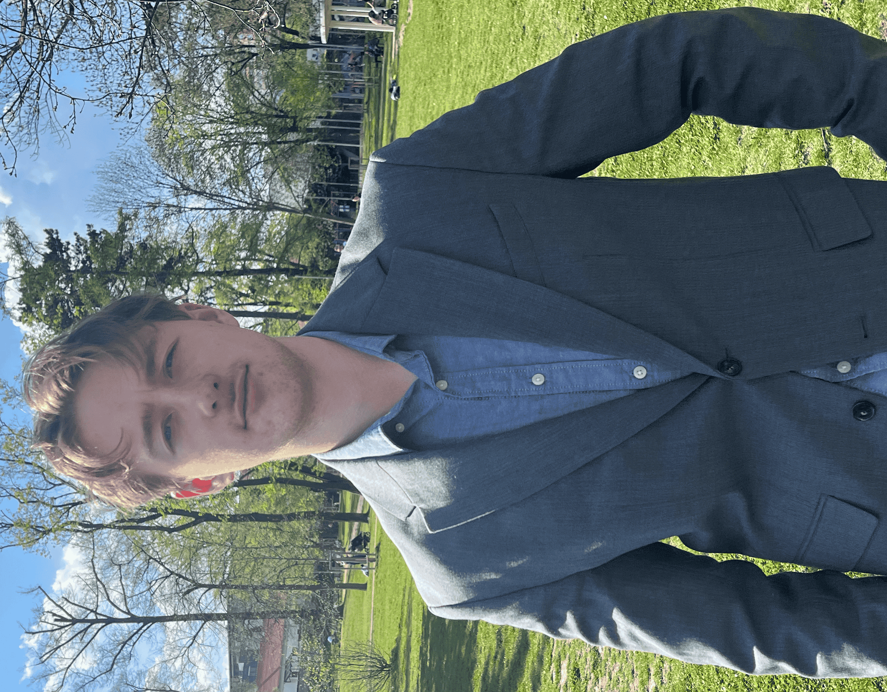
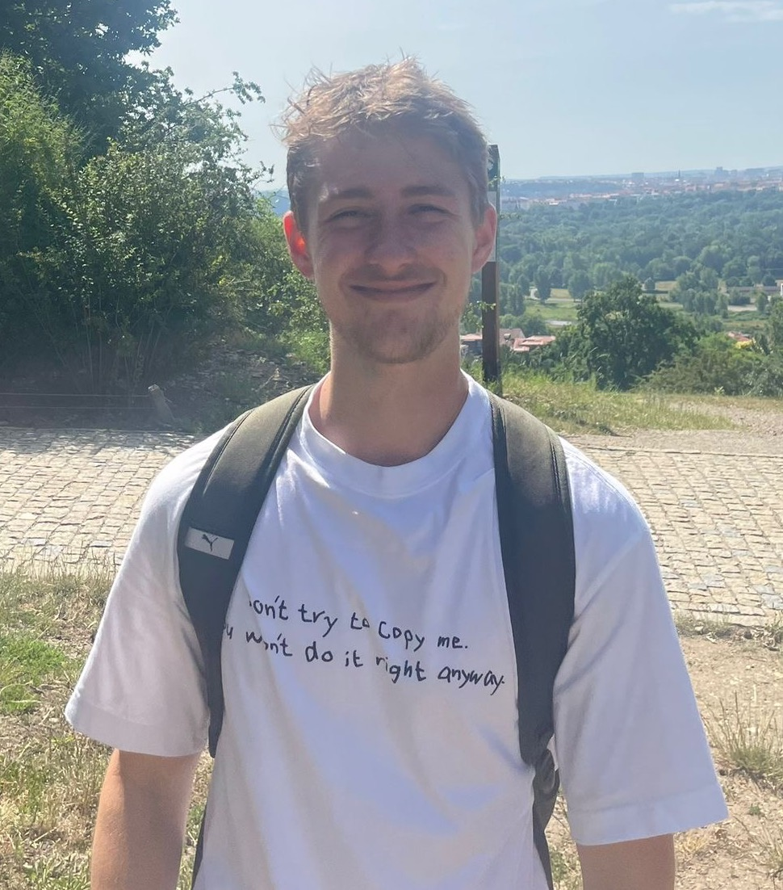
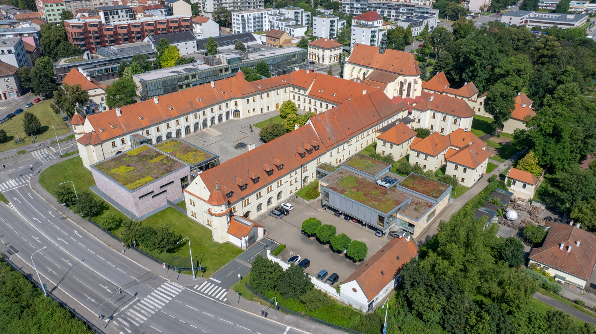
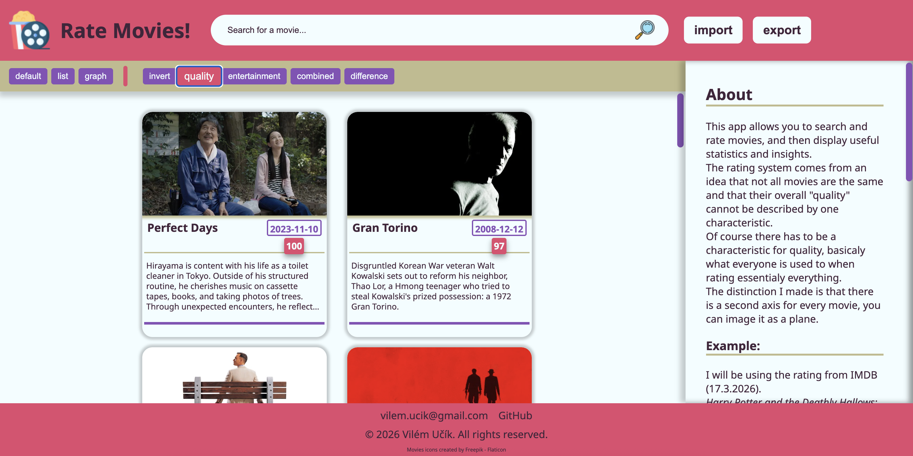
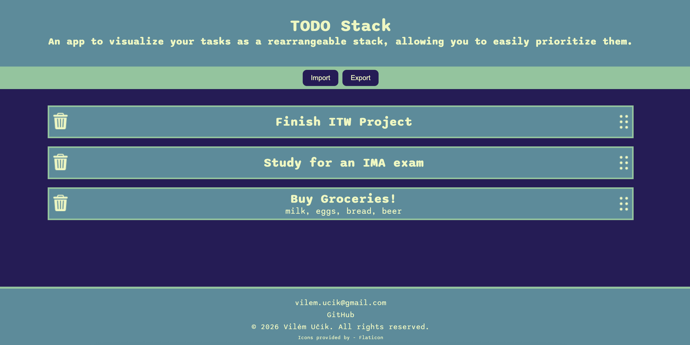
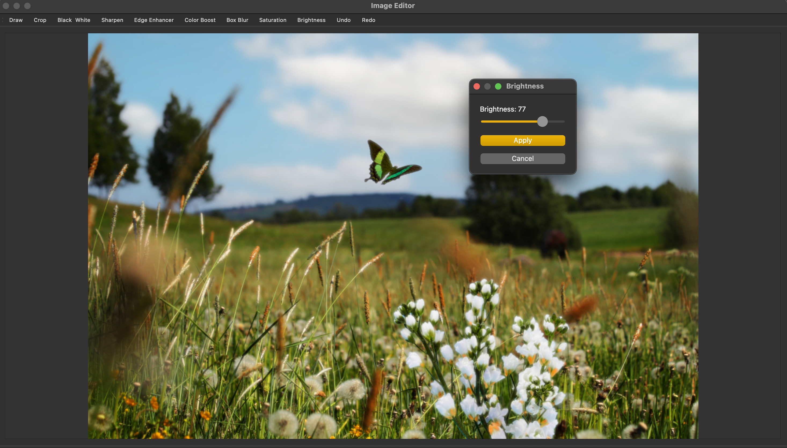

About me
I am an IT student at VUT in Brno, originally from Litoměřice in the northern Czech Republic. My passion for technology began in high school and has driven me ever since. I am always eager to learn and experiment with new things. Outside of IT, I enjoy traveling, playing sports, and immersing myself in books, music, movies, and video games. Chess is another game I used to play a lot of back in high school - it taught me the value of strategic thinking and perseverance. That's me in a nutshell! Scroll down to learn more about me!


Education
I am a fast learner who thrives on hands-on experience. Throughout my studies, I have found that I learn best by solving real-world problems and building projects. So, I dedicate my free time to exactly this, continuously broadening my technical horizons.
Work experience and volunteering
As a full-time student, my primary focus has been my education and self-improvement. Additionally, I have dedicated myself to volunteering and other projects that promised positive impact on my environment.
-
Language Teaching 2025 – Present
Since 2025, I have been teaching Czech to foreigners through Preply. This experience allows me to regularly practice professional English and enhances my ability to communicate complex ideas clearly.
-
Volunteering at Moudrá Síť 2023 – Present
Moudrá Síť is a project dedicated to helping senior citizens navigate modern technology. As a volunteer, I provide guidance to those struggling with the digital landscape, which has taught me immense patience and the ability to simplify difficult topics. I believe this "linguistic flexibility" is a vital asset in the workplace for aligning the goals of development, management, and marketing teams.
-
Freelance Web Development 2022 – Present
Designing and deploying bespoke web solutions, ranging from high-performance static sites to complex dynamic applications. I manage the full development lifecycle, ensuring responsive design, optimized performance, and user-centric functionality for a diverse client base.
-
Young Caritas Advocates Project 2023 – 2024
Selected for a year-long advocacy program focused on social impact and community improvement. Over the course of the project, I designed and executed two awareness campaigns under the guidance of professional mentors. This experience involved intensive training in project management, effective communication, and team collaboration. The program culminated in a final presentation of my results and reflections at the Young Caritas Forum in Prague.
Skills and strenghts
Programming languages and technologies
- Python
- JavaScript/TypeScript
- HTML/CSS
- React
- C/C++
- SQL
- Rust
- GitHub
- LaTeX
- MacOS, Windows, Linux
Soft skills
- Presentation
- Logical thinking
- Spatial imagination
- Punctuality
- Problem solving
- Teamwork
- Thinking outside the box
- Time management
- Strategy and planning
- Attention to detail
- Flexible
- Reliable
- Curious
- Patient
- Motivated
- Courageous
Other
- Video and photo editing
- Cultural analysis
- Story writing
- Practical and theoretical chess knowledge
- Painting and drawing
Personal projects
Since 2022, I have built a wide range of side projects across different IT fields, allowing me to explore new technologies and solve unique technical challenges.
-
Movie rating interface

This project is a full-stack movie rating application built with React, Node.js, and IndexedDB that reimagines how we evaluate cinema. Instead of relying on a traditional, one-dimensional star scale, it introduces a dual-axis rating system that separates a film's objective technical quality from its subjective entertainment value. By integrating the TMDB API with local browser storage, the application empowers users to build a personalized, offline-capable database where they can seamlessly search for films, rate them, and analyze their preferences through dynamic visual layouts and custom mathematical scoring.
-
TODO Stack - PWA

TODO stack is a high-performance, offline-first task management Progressive Web App (PWA) built with React, TypeScript, and IndexedDB. Designed to enhance productivity through visual prioritization, the application features a custom drag-and-drop interface for seamless task reordering and unique contextual insertion points that allow users to add items exactly where they belong. By leveraging Service Workers and local browser storage, it delivers a highly responsive, type-safe, and native-feeling user experience with instant load times and complete offline reliability.
-
Rusty Mind - Chess Engine in Rust
This project is a high-performance chess engine developed entirely in Rust, designed to establish a clear and efficient foundation for building intelligent chess AI. It leverages core principles of game theory and systems programming by implementing the Negamax algorithm with Alpha-Beta pruning to efficiently search for optimal moves. The engine features a custom static evaluation function that assesses board positions not only based on piece values but also on complex positional factors like center control, piece activity, and phase-specific strategy. By prioritizing simplicity, efficiency, and code independence, this project successfully demonstrates expertise in leveraging Rust’s performance capabilities to translate complex algorithmic concepts into a fast, robust, and extensible system.
-
Image Editor App

This project is an educational image editor built in Python, designed to explore the fundamentals of GUI programming and image manipulation techniques. Utilizing a combination of PyQt for the graphical interface and NumPy for efficient image array handling, the application allows users to perform basic editing tasks such as applying simple filters, adjusting color channels, cropping, and painting. Although intentionally kept simple for learning purposes, the engine incorporates foundational concepts from OpenCV to handle accelerated kernel operations. This project serves as an excellent demonstration of how to integrate different Python libraries to create interactive, functional applications, providing a hands-on understanding of image processing and graphical user interface development.
-
Go interface with AI bot
I independently developed a complete game engine for the game of Go, utilizing C, C++, and the RayLib library. This project was a deep dive into complex algorithmic design and systems programming, requiring me to implement the intricate rules of Go and build an intelligent engine capable of playing the game. A core achievement was implementing a Zobrist hash for efficient position comparison, which is crucial for optimizing state representation. This endeavor served as a rigorous exercise in complex logic and architecture, allowing me to practice the implementation of sophisticated AI concepts and gain a profound understanding of how complex game rules and AI behaviors are translated into functional, performant code.